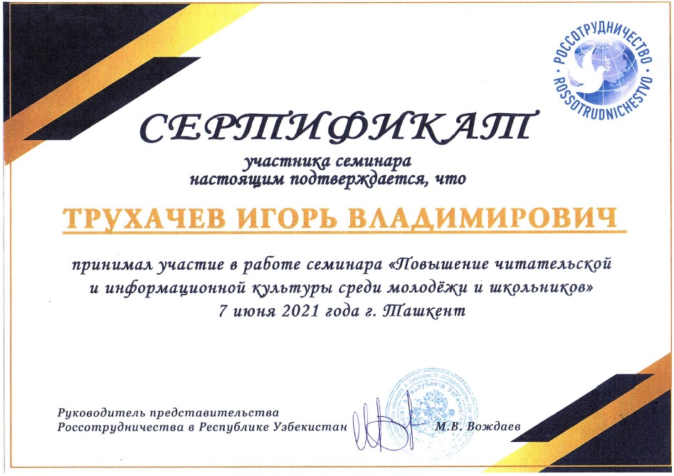
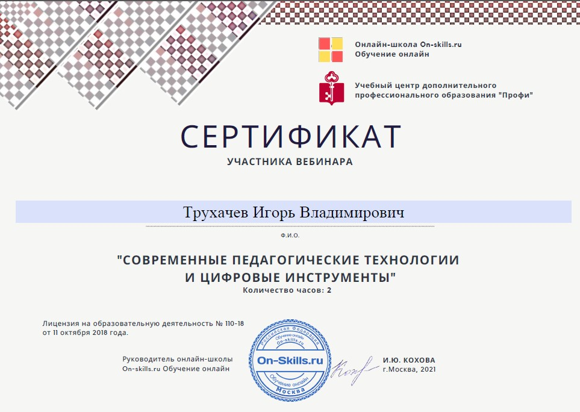
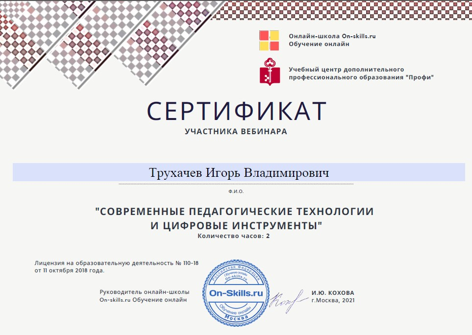
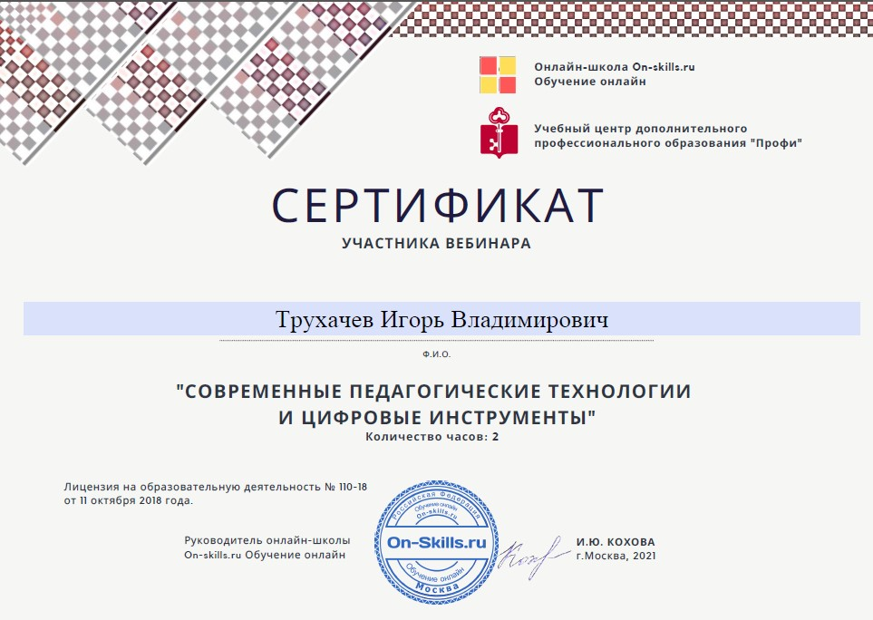

Трухачев Игорь Владимирович, учитель истории средней школы № 47 Сергелийского района города Ташкента
Цель: мониторинг профессионального роста, отражающий уровень компетентности и конкурентоспособности; Задачи: 1 выявление достижений в работе и их влияние на результаты деятельности; 2 предоставление возможности для самореализации и развития творческого потенциала; 3 представление, популяризация и распространение опыта работы; 4 повышение престижа профессии преподавателя; 5 развитие рефлексии и критического мышления ; 6 систематизация накопленного материала.
Педагогическое кредо«Жить – вот ремесло, которому я хочу учить воспитанника. Выходя из моих рук, он будет не судьей, не солдатом, не священником: он будет, прежде всего, человеком: всем, чем должен быть человек, он сумеет быть в случае необходимости, так же хорош, как и всякий другой, и как бы судьба не перемещала его с места на место, он всегда будет на своем месте» Ж.Ж.Руссо Эти слова Руссо запали мне в душу еще во время учебы в университете. И до сих пор я не перестаю думать, а как же действительно сделать так, чтобы научить ребенка жить, как помочь ему стать человеком… как его научить…? Каким должен быть тот Учитель, который пытается это сделать? Наверное, на эти вопросы никогда не удастся ответить со 100 % уверенностью…но все же…Я считаю, что Учитель должен обладать умением найти правильный подход к каждому ребенку, чтобы зажегся в нем огонек познания, чтобы появилось желание учиться. Главное — понимать ребёнка. Открыть ему свое сердце, впустить и принять его таким какой он есть. Ведь каждый из них, прежде всего, личность, со своим мировоззрением, миропониманием. А значит, главное предназначение человека, решившего посвятить себя работе с детьми, развить, обогатить эту личность. Необходимо создать условия для творческого развития ребенка, не указать проторенный путь познания, а помочь найти свою, пусть даже узенькую и труднопроходимую тропу; не тянуть за руку на гору, находясь на ее вершине, а помочь преодолеть ее, идя рядом, вовремя подставив плечо. Как этого достичь? На самом деле все просто: учителю нужно самому быть яркой личностью. Ведь как писал К. Д. Ушинский «только личность может воспитать личность»…
Педагогические задачиВ процессе моего становления в роли преподавателя я определил для себя следующие педагогические задачи, которые и стараюсь решать каждый день: 1. Научить учащихся быть независимыми. Чем больше мы для них делаем, тем меньше они учатся делать для себя сами, ведь как гласит известная поговорка: «Голодному человеку дайте не жареную рыбу, а невод»; 2. Необходимо воодушевлять учащихся максимально быть самими собой, ободрять каждого, чтобы он гордился своими достижениями; 3. Создать условия для выбора каждым учеником своего собственного образовательного маршрута, развития учащегося в соответствии с его индивидуальными особенностями; 4. Убедить ученика в том, что он кладезь возможностей, заставить его поверить в себя, в свои силы, предоставить возможность получать удовольствие и радость от результатов своего труда; 5. Моя практическая задача – привести роман ученика с историей к счастливому продолжению; 6.Подготовить выпускников школ, обладающих глубокими знаниями, широким кругозором и умением сориентироваться на самостоятельное трудоустройство.
Сертификаты
За активные участия на различных научных конференциях и для самостоятельного самообучения

 

